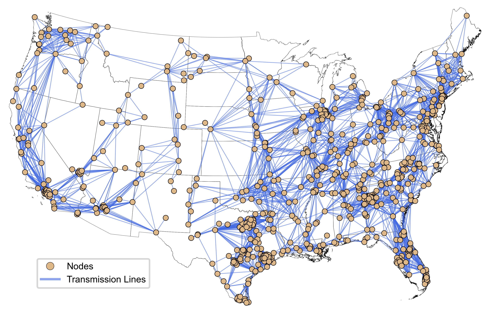

gridops#
An open-source, customizable production cost model (PCM) for the U.S. interconnections.
pip install gridops
gridops is a nodal grid operations model for three major U.S. interconnections (Western, Eastern, and ERCOT). It uses a linear DC Optimal Power Flow (DC-OPF) approximation to optimize hourly unit commitment and economic dispatch over a rolling horizon that you configure. Pyomo builds the model, which can be solved with the open-source (e.g., HiGHS) or commercial (e.g., Gurobi) solvers.
gridops was created to:
Address weather and water dynamics and associated vulnerabilities in U.S. bulk power systems.
Link with a wide range of hydrometeorological datasets and energy system/machine learning models to explore future uncertainty in grid operations.
Analyze current and future grid stress and reliability trends under a wide range of weather conditions, generation mixes, and demand growth scenarios.
Create simple and user-tailored representations of the U.S. interconnections that balance model accuracy and run time for the research question at hand.


Reduced network topology represented in gridops. Three interconnections run separately.#
What gridops does, which regions and problem types are available, and how to install the package and a solver.
Run the bundled two-day Western Interconnection example notebook, then plot hourly locational marginal prices, unserved energy, and the generation mix.
Configuration file reference, input data requirements, output data, the full mathematical formulation, rolling-horizon simulation, restarts, and solvers.
Detailed descriptions of every public class and function, the restart utilities, and the grid operations model builder.
How it works#
Point a YAML configuration file at the network, generator parameters, storage, load, solar, wind, hydro, fuel price and generator outage inputs, and at the model output destinations.
gridops builds one Pyomo DC-OPF model and solves it horizon by horizon. Before each solve it updates the time-varying parameters and carries generator output and storage state of charge forward.
Hourly generator dispatch, transmission line flows, voltage angles, unserved energy, locational marginal prices and storage operations are written to Parquet files.
The objective minimizes total system operating cost. The model enforces nodal power balance, DC power flow, transmission line limits, generator ramp rates, hydro energy budgets, renewable availability, generator capacity losses, and storage dynamics. See Mathematical formulation for more detailed description and the full set of equations.